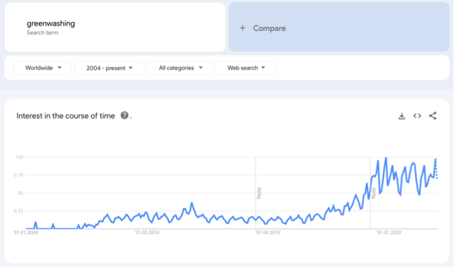
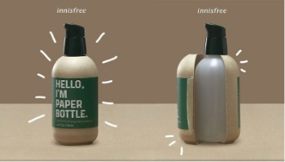
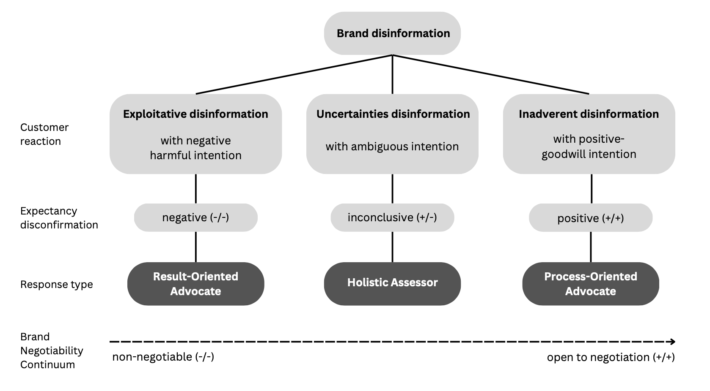

In 2022, Swedish oat milk brand Oatly claimed that switching from dairy to oat milk was “the single biggest lifestyle change” for reducing environmental impact. But as the UK Advertising Standards Authority later revealed, the assertion relied on the opinion of a single climate expert and was ultimately deemed misleading (The Guardian, 2022). Two years later, Virgin Atlantic promoted its “100 percent sustainable aviation fuel”—a claim that vastly overstated the reality that their fuel produced only slightly fewer emissions than conventional jet fuel (Time, 2024). FIJI Water’s slogan, “Bottled at the source, untouched by man,” similarly obscured troubling practices: extensive diesel use, 5,500-mile shipping, and the company’s refusal to pay local water taxes—even as 12 percent of Fijians lacked access to clean drinking water (New University, 2021).
These cases share a common thread: they were all deemed misleading by regulators and widely condemned in the media as greenwashing. Greenwashing occurs when companies combine poor environmental performance with positive communication about it (Delmas & Burbano, 2011). Today, it permeates nearly every sector—from food and cosmetics to fashion, energy, transportation, and finance.
This wave of high-profile cases points to a bigger trend. As regulators act against false claims, public awareness of greenwashing has grown rapidly. Google Trends data show interest in the term has surged over the past 15 years (see Figure 1). Academic interest has followed suit: only 27 percent of all “greenwashing” publications indexed on Google Scholar appeared before 2010; since then, the number has more than tripled.

One striking case is the South Korean beauty brand Innisfree. In 2021, it marketed its products in “paper bottles,” only for consumers to discover plastic bottles hidden beneath cardboard sleeves. (see Figure 2).
.
The backlash was swift and fierce, turning the campaign into a textbook example of consumer deception.
To understand how people respond to such betrayals, Yannopoulou et al. (2024) applied Expectancy Disconfirmation Theory (EDT), which suggests consumer satisfaction depends on whether brand promises match reality. Their qualitative study analyzed 735 comments from 632 unique users across Instagram, Facebook, and YouTube, using thematic analysis to map patterns in consumer reactions. This approach revealed three distinct response types, illustrated in Figure 3.

Some consumers, dubbed “Result-oriented Advocates,” focused entirely on outcomes. When they realized the claims were false, they reacted with anger and called for boycotts, often abandoning the brand altogether. Their comments frequently featured capital letters, expletives, and negative emojis:
“THEY SHOULD BE SUED!!!!😡😡”
“Are you f*****g kidding meeeeee!!!!!!!🤯🤯🤯🤯🤯”
“This is infuriating and manipulative. Companies are clearly taking advantage of our good conscience🤦♀️🤦♀️”
“Never buying anything from this company”
Others, “Process-oriented Advocates,” took a more forgiving stance. They valued the company’s efforts and were willing to overlook missteps if they believed the intentions were genuine. A typical comment reflected this view:
“Wouldnt call it greenwashing. How you are supposed to hold the cosmestics with paper packaging? Also if you already read their notes, you’d know that by doing this they reduce around 50 percent of plastic consumption and boost recycling of the plastic packaging as well with this line. Firms are making changes within their means to become more sustainable, please dont disregard it with a simple ‘greenwashing’ hat.”
A third group, “Holistic Assessors,” adopted a nuanced view, weighing both results and processes. Their reactions were often ambivalent but no less critical:
“If they’re gonna separate plastic from paper, they should also separate everything else. Or, they should just make an actually eco-friendly bottle by removing the paper entirely or making the whole thing out of paper, instead of lying to everyone.”
The Innisfree case shows how greenwashing creates deep fault lines in consumer trust. While earlier studies show exaggerated eco-claims erode brand equity (Nyilasy et al., 2014; Seele & Gatti, 2017), Yannopoulou et al. (2024) go further by highlighting how consumers’ moral frameworks shape their responses. Misaligned environmental messaging breeds skepticism (Nadaňyiová et al., 2020), while authentic, transparent communication fosters loyalty—even amid failures (Guo et al., 2017).
For brands, the message is clear: authenticity and transparency are no longer optional. Superficial eco-claims may generate short-term buzz but risk long-term reputational and financial damage, especially as social media amplifies negative word-of-mouth. To avoid becoming the next viral scandal, firms must embed sustainability into their core operations and engage in honest crisis communication when missteps occur.
For researchers, future studies could examine cultural and generational differences in responses to greenwashing, as well as how brands can rebuild trust post-crisis.
Ultimately, greenwashing reflects a deeper tension: the market’s appetite for sustainability often outpaces its willingness to pursue systemic change. Brands that survive this scrutiny will be those whose sustainability claims are backed by measurable action—not just paper wrapped around plastic.
The Guardian. (2022, January 26). Oatly ads banned by UK watchdog over misleading green claims.
Time. (2024, April 10). Virgin Atlantic Airways ad banned in UK for misleading sustainability claim.
New University. (2021, March 10). The dark secret of FIJI Water.
Google Trends. (2025). Interest over time for “greenwashing” (2004–2025).